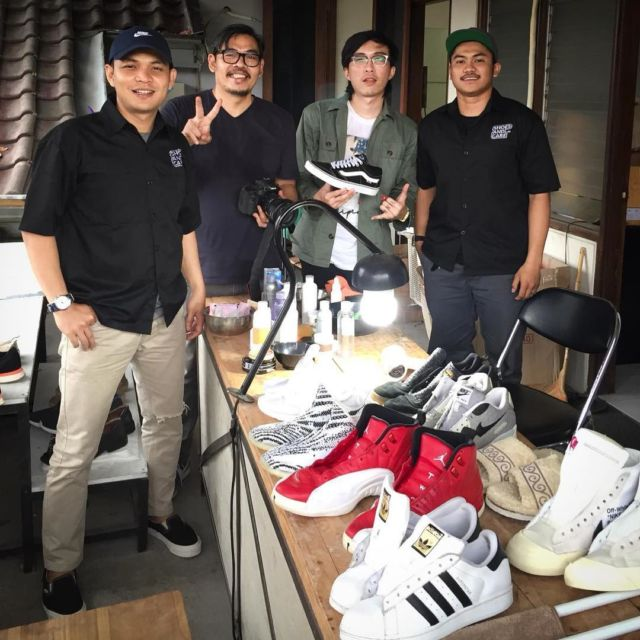
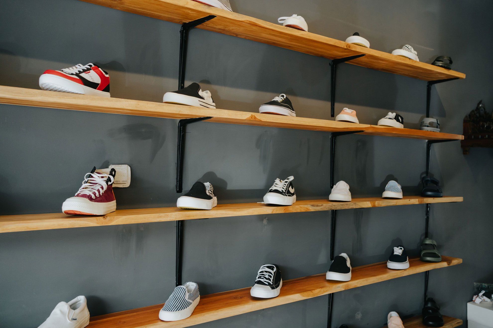

My Journey Start from when i wanna buy some shoes but i was out of budget and then i searching out for youtube and google, what casual shoes that cheap and durable at the same time and it shows me a local brand named piero since then i like to see a review about local brand and there's one reviewer that really have my attention because he described specifically on the shoes he reviewes so i was tempted to buy one of the shoe he recommended.
Day after day i wore those local shoes and it felt really good, soft, and its just what i want and expected to get at that price, so i started looking at other local brands and i just realised that there are many Indonesia local brands that have gone global, one of the brand is sagara boots, Sagara boots selecting the best leather and all production being done manually by hand that made the price and quality of these shoes being class and expensive. Many foreign media have exposed the ability of the Indonesian shoe industry to produce quality boots that can compete with world class products. In fact, the main market for the Sagara brand is US, around 80 percent of the production. The rest is distributed in Europe and Asia.
Knowing that makes me kinda sad because i dont even know and ever heard of its name and then i realized many locals dont even look and care about goods that made in their own country. Seeing that around 80% of sagara boots production distributed in US shows that disinterest and lack of appreciation from local for domestic products. That's why i created this website so that we realized the value of our own goods and give more appreciate and credit to local brands so they can produce more good product and while helping MSMEs and the economy of locals and Indonesia.
